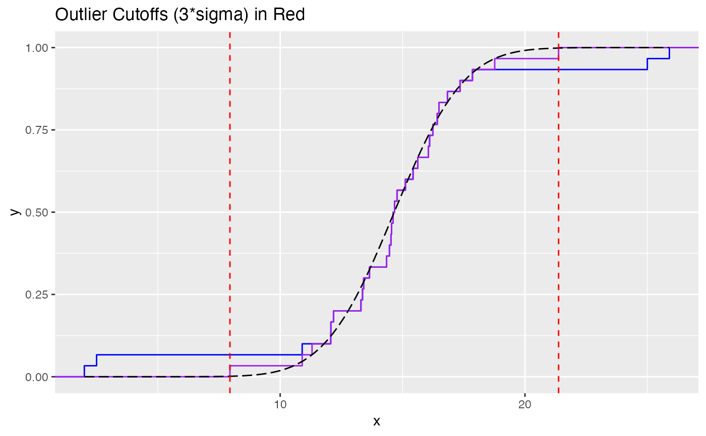

Impute Outlier Values
impute_outliers.RdGiven a numeric vector, this function imputes outlier values, defined as \(3 \times \sigma\) from the mean, back to a robustly calculated Gaussian. Gaussian parameters (\(\mu + \sigma\)) are robustly calculated.
Value
A vector of values approximating a Gaussian distribution with the outlier samples imputed back to the robust Gaussian fit.
Details
The maximum value, i.e. the \(100^{th}\) percentile, is pushed back to the \(3 \times \sigma\) value of the Gaussian.
See also
pnorm(), qnorm(), helpr::get_outliers()
Other impute:
imputeNAs(),
impute_predictors()
Examples
# Gaussian with 4 outliers (2hi, 2lo)
vec <- withr::with_seed(101, c(2, 2.5, rnorm(26, 15, 2), 25, 25.9))
pars <- attributes(helpr::get_outliers(vec, n_sigma = 3, type = "para"))
pars
#> $mu
#> [1] 14.66106
#>
#> $sigma
#> [1] 2.237713
#>
#> $crit
#> [1] 7.947922 21.374201
#>
impute_outliers(vec)
#> [1] 7.947922 11.302062 14.347927 16.104924 13.650112 15.428719
#> [7] 15.621538 17.347933 16.237580 14.774531 16.834057 14.553481
#> [13] 16.052896 13.410311 17.855511 12.066361 14.526633 14.613324
#> [19] 13.300491 15.116931 13.364659 10.899384 14.672489 16.417044
#> [25] 14.464039 12.072156 16.488872 12.179220 18.764836 21.374201
# Plot what is happening:
# original `vec` and critical 3*sd cutoffs in `red`
library(ggplot2)
range <- seq(min(vec), max(vec), length.out = 100)
fit_data <- data.frame(
x = range,
y = stats::pnorm(range, mean = pars$mu, sd = pars$sigma)
)
ggplot(data.frame(x = vec), aes(x = x)) +
stat_ecdf(color = "blue") +
stat_ecdf(data = data.frame(x = impute_outliers(vec)),
aes(x = x), color = "purple") +
geom_line(data = fit_data, aes(x = x, y = y),
colour = "black", linetype = "longdash") +
geom_vline(xintercept = pars$crit, colour = "red", linetype = "dashed") +
ggtitle("Outlier Cutoffs (3*sigma) in Red")
